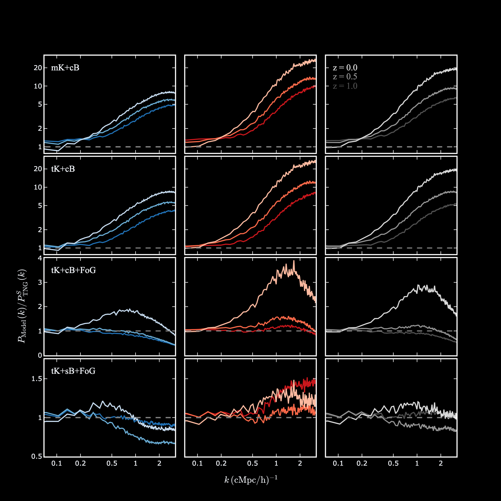

.
The white background signifies wavenumbers not included in the fits
obtaining the PVD values. z = 1 is shown in the paper. RSD errors
grow with time across all populations. The z = 0 matter RSD errors
are exceptionally large, although the reason is unclear.
The scale-dependent behavior for each plot is similar for each tracer
at each redshift. However, the decline at small scales becomes sharper
at later times. These trends are difficult to attribute to anything
physical without a deeper study, but largely support the conclusion
that models of RSDs that only include the linear Kaiser and FoG terms
are insufficient.")
§4.3: RSD Errors at all redshifts
§4.3: Redshift-Space Galaxy Auto Power Spectra
§5.3.1: Ω with Error Bars

§A: Resolution Dependence of Correlation Coefficients
§C: the redshift evolution of HI auto model errors
§C: HI-Galaxy Models at all redshifts

§C: The redshift evolution of HI-Galaxy models

§C: actual vs inferred Omega, all redshifts

§C: Accuracy of inferred Omega values for each model with redshift
§D: Comparing errors between auto and cross-powers
§D: comparing the validity of constant-bias assumptions
{kind=link}
{kind=link}
{kind=link}
{kind=link}
{kind=link}
{kind=link}
{kind=link}